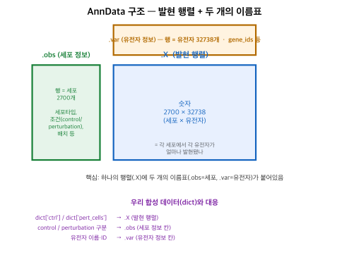
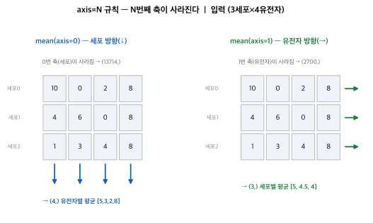

실제 단일세포 데이터(PBMC 3k)를 불러와 구조를 뜯어보고 다뤄본 기록. 합성 데이터 → 진짜 데이터로 넘어가는 첫 실습.
단일세포 데이터의 표준 컨테이너. 대회 데이터도 이 형식(.h5ad). PBMC 3k = 사람 말초혈액 면역세포 약 2700개.
>>> adata = sc.datasets.pbmc3k() >>> adata.shape (2700, 32738) # 세포 2700 × 유전자 32738

| 칸 | 내용 |
|---|---|
.X | 발현 행렬 (세포 × 유전자), sparse(0이 대부분이라 압축) |
.obs | 세포 정보 (행 = 세포) — 세포타입·조건 등 |
.var | 유전자 정보 (행 = 유전자) — gene_ids 등 |
dict보다 나은 이유: 발현 행렬에 세포·유전자 이름표가 딱 붙어 함께 다녀서 헷갈릴 일이 없음.
| 한 것 | 코드 | 우리 파이프라인 대응 |
|---|---|---|
| 세포·유전자 골라내기 | adata[:, genes] | 대괄호 인덱싱 |
| 발현 보기 | .X[:5].toarray() | 세포마다 다른 값 |
| 필터링 | sc.pp.filter_cells/genes | (전처리, 새로 배움) |
| 그룹 평균 | adata.X.mean(0) | ctrl_mean 그대로 |
필터링 결과: 유전자 32738 → 13714 (거의 안 켜진 유전자 제거). 필터가 .obs/.var에 정보를 채움(n_genes, n_cells).

axis=N = N번째 축이 사라진다. (2700, 13714)에서 mean(axis=0) → 0번 축 사라짐 → (13714,) 유전자별 평균. 우리 ctrl_mean = X.mean(0)이 바로 이것.
.mean(0), 인덱싱)이 실제 대회 데이터 형식(AnnData)에 그대로 통한다. 형식만 dict → AnnData로 바뀔 뿐 원리는 동일.